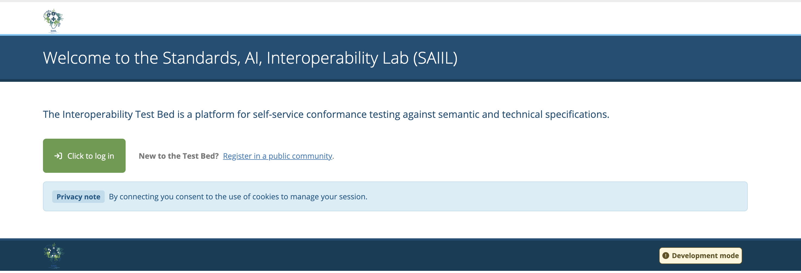
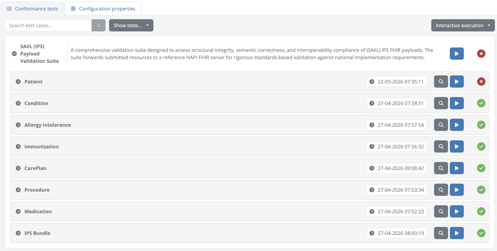
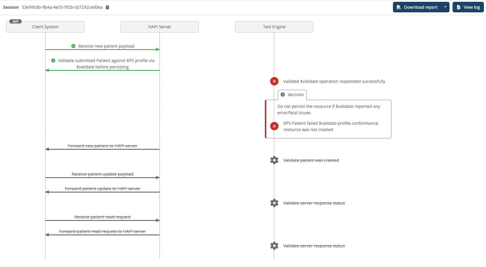
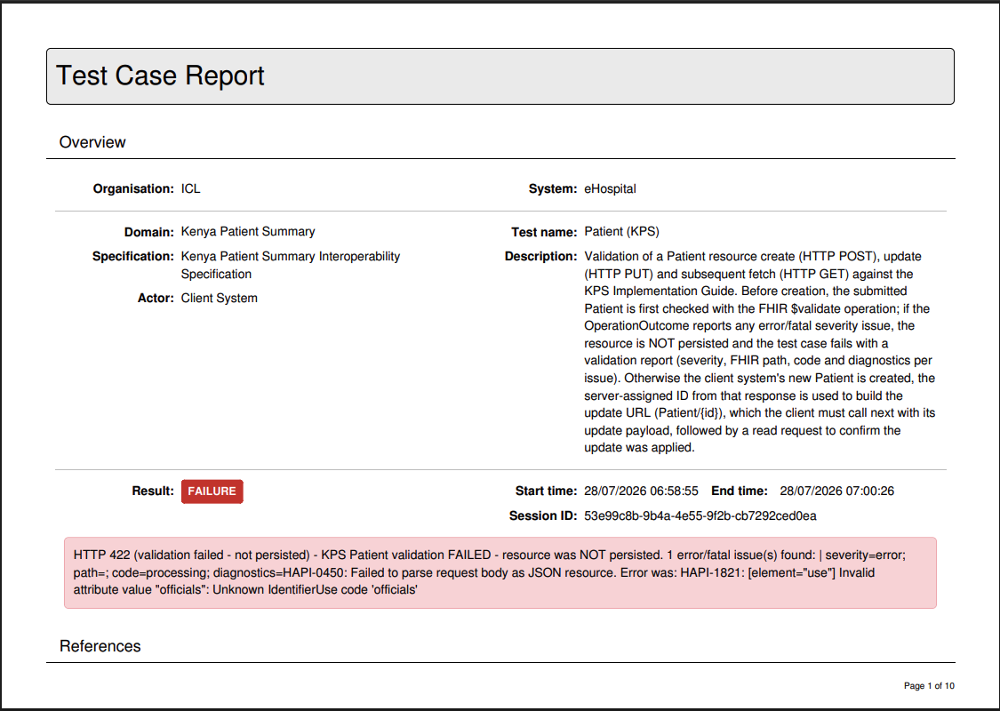
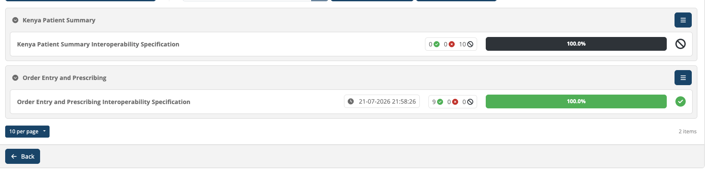

Making interoperability in health, work intelligently.
We help African health technology teams move from fragmented, proprietary systems to standards-based, conformance-validated architectures — so health data can finally move where it’s needed.
Africa carries 24% of the global disease burden but a fraction of the world’s accessible, structured health data. Not because the data doesn’t exist — but because the systems holding it can’t talk to each other.
Every SAIIL engagement moves through the same sequence — each pillar building on the one before it: people first, then tools, then proof, then transfer of knowledge.
Cross-functional cohorts of developers, clinical informaticians, and ministry representatives come together in structured mentorship cycles — typically 8–12 weeks — learning to build and govern interoperable systems together, not in isolation.
Every team gets access to pre-configured, open-source interoperability infrastructure — HAPI FHIR, the EC Interoperability Test Bed, and FSH/SUSHI authoring environments — so no one starts from zero.
Systems are tested — automatically and repeatedly — against national and international FHIR standards using the ITB sandbox. Conformance isn’t declared. It’s demonstrated.
A phased curriculum takes teams from FHIR basics through profile authoring to full cross-system integration testing — contextualised to African health system realities, delivered low-bandwidth and train-the-trainer ready.
FHIR and IHE profiles set the rules. AI helps teams get there faster — suggesting mappings, explaining failures in plain language, and catching data-quality issues before they reach the test bed. The standard stays the source of truth; the ministry stays in control.
AI proposes field-to-profile mappings from legacy exports and HL7v2 feeds, so implementers start from a draft instead of a blank FSH file.
When validation fails, AI explains why in plain language — not just an error code — and points to the specific rule in the implementation guide.
Pattern recognition flags likely data-quality issues — duplicate identifiers, coding drift, missing references — before they ever reach the test bed.
Our Interoperability Test Bed validates that health systems conform to FHIR standards — before they ever connect to a live health information exchange.
Screenshots from the live Interoperability Test Bed — not mockups.

Implementers log into the Test Bed with their organisation account before submitting a system for validation.

The SAIIL (IPS) Payload Validation Suite checks Patient, Condition, Immunization, CarePlan and more against the national profile.

Every request between the client system, the reference HAPI FHIR server, and the test engine is logged step by step.

Failures come back with the exact FHIR path, error code, and diagnostics — something implementers can act on, not just a red X.

Pass rates roll up by specification, so ministries and implementers can see readiness at a glance.
We don’t replace government investments. We make them interoperate.
SAIIL works with — not instead of — national institutions and existing digital health investments.
Whether you’re a ministry, an implementer, or a funding partner — there’s a place to start.